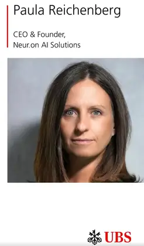

UBS dà risalto alla visione della leadership di Paula Reichenberg
Siamo fieri di annunciare che UBS ha dato risalto alla nostra CEO e fondatrice, Paula Reichenberg, in un post su LinkedIn dedicato alla sua particolare visione della leadership. La sua ricetta: trasparenza, competenza e la forza di un team ben scelto.
Per Paula, introspezione e apertura non sono debolezze ma punti di forza. Lo sono soprattutto nelle start-up in forte crescita, dove una collaborazione solida è indispensabile per riuscire.
Presso Neur.on AI Solutions Paula applica questa filosofia per guidare la nostra innovazione legaltech. L’obiettivo: offrire soluzioni sicure, basate sull’IA, che semplificano i complessi flussi di lavoro multilingui di avvocati ed esperti giuridici internazionali.